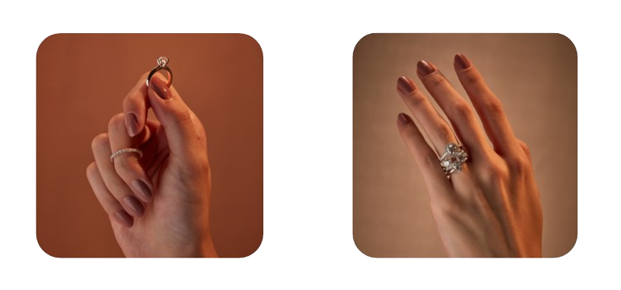
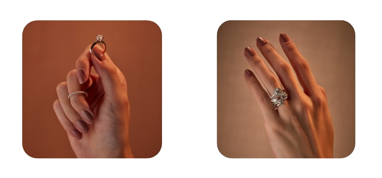

A marca Stella Diamonds nasceu da nova geração de uma família envolvida ha mais de um século com joalheria.
Uma história incrível no mundo das joias e pedras preciosas que começou em 1906 com nicolau gravina até chegar aos netos e bisnetos (nos dias atuais)
a marca stella diamonds nasceu da nova geração de uma família envolvida ha mais de um século com joalheria.
uma história incrível no mundo das joias e pedras preciosas que começou em 1906 com nicolau gravina até chegar aos netos e bisnetos (nos dias atuais)
apaixonado por diamantes e pelas técnicas de feitio de uma joia o fundador da stella diamonds daniel granvina cunha, já trabalhava há mais de 20 anos com a fábrica e as lojas físicas e as lojas físicas da familia quando surgiu o momento decisivo
a necessidade de se especializar o levou a criar uma nova marca voltada ao comércio online e dedicada na busca e seleção de pedras preciosas
.png) 

daniel é neto de stella maris gravina a quem ele decidiu homenagear dando o nome da nova joalheria foi a sua avó, stella, quem o apresentou o fascinante mundo das joias e o ajudou a cultivar desde muito cedo o seu amor por joias, diamantes e esmeraldas.
para isso, agregou o conhecimento passado de gerações aos estudos em instituições locais e internacionais. inclusive a gia (gemological institutel of america), aprimorando assim todo processo de fabricação de joias e seleção de pedras preciosas


para a stella diamonds, daniel criou linhas organizadas com padronização de tamanho padrão de feito impecavel e design que mescla inovação e reeleitura de anies clássicos


com relação aos diamantes a busca se guiou pelo equilibrio perfeito entre cor pureza e preço justo
as coleções surpreendem com originalidade nas proporções estrutura e harmonia, tudo para valorizar ao máximo o diamante do anel.
para a stella diamonds, daniel criou linhas organizadas com padronização de tamanho padrão de feito impecavel e design que mescla inovação e reeleitura de anies clássicos
com relação aos diamantes a busca se guiou pelo equilibrio perfeito entre cor pureza e preço justo
as coleções surpreendem com originalidade nas proporções estrutura e harmonia, tudo para valorizar ao máximo o diamante do anel.
Aliado ao conhecimento adquirido em todos esses anos, chegou o momento de lançar marca stella diamonds em todo território nacional por meio das vendas online "o comércio online nos possibilitou oferecer toda qualidade que acumulamos nessa história centenária, por um valor mais acessivel. fico feliz em ver mais pessoas com bons diamantes com uma boa joia. o momento merece celebração o momento merece qualidade. é essa joia que atravessará gerações" conclui daniel.
Aliado ao conhecimento adquirido em todos esses anos, chegou o momento de lançar marca stella diamonds em todo território nacional por meio das vendas online
"o comércio online nos possibilitou oferecer toda qualidade que acumulamos nessa história centenária, por um valor mais acessivel. fico feliz em ver mais pessoas com bons diamantes com uma boa joia. o momento merece celebração o momento merece qualidade. é essa joia que atravessará gerações" conclui daniel.
"queremos estender esse convite para que conheça nossa linha e descubra mais sobre este fantástico mundo das pedras preciosas"
"queremos estender esse convite para que conheça nossa linha e descubra mais sobre este fantástico mundo das pedras preciosas"

tire as suas dúvidas com o nossos especialistas. estamos no whats para todas as informações.


© 2024, stella diamonds, inc todos os direitos reservados